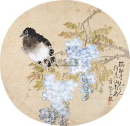

重庆梁平中学人物介绍
方炳南
方炳南（1841-1911），别号重菊轩主人，晚清著名民间画家，画僧竹禅弟子，梁平竹帘画创始人。1907年梁中创办之初任图画教师，还担任过成都、重庆、梁山劝工局负责人。多幅佳作收入《益州书画录》，有《炳南花鸟画谱》传世，其业绩载入《中国美术家名人辞典》。
张继善
张继善（1859-？），号璞山，清末举人。赴京会试不第，签分河南知县，后丁忧返乡，任梁山桂香书院主讲、梁中第12班过问教员，辑录《板桥唱和诗集》及《联语类存》。
孙尔康
孙尔康（1867-1936），清末举人，梁中早期国文教员。曾任梁山教育局局长、梁山县志总纂。其书法自成一家，诗文笔势奔放，不落俗套。
张孔修
陈克农
陈克农（1904-1990），北京大学中文系毕业，1925年加入中国共产党，解放前历任梁山县教育局长、中共梁山县委宣传部长、达县县委代理书记、梁达游击队特支书记、梁中国文教员。解放后人梁平县文教科长、南充师院汉语研究室主任、副教授，四川省哲学社会科学联合会学术委员、南充市书法篆刻协会主席、《汉语大字典》编委
曹建勤
曹建勤（1907-1989），武昌中华大学肄业，1925年加入共产党，1925年至1930年任全总青年工人运动委员会主任，南京、浙江、江西、河北共青团省（市）委书记，中共北平、天津市委书记等职、抗战初期任梁中训育主任，解放后任梁平县政协秘书长、副主席。
范纪曼
范纪曼（1906-1990）梁中15班学生，武昌军政学校暨北大艺术学院戏剧系毕业。1926年加入中国共产党，1929年任中共梁山县书记。解放前长期在沪宁、北平等地从事地下情报工作，曾打入国民政府国防部任少将委员，解放后在中共华东局和上海公安局工作。1955年受“潘汉年、杨帆”冤案诛连判刑20年，1975年特释，1980年平反昭雪。